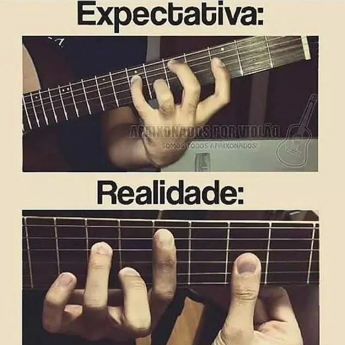
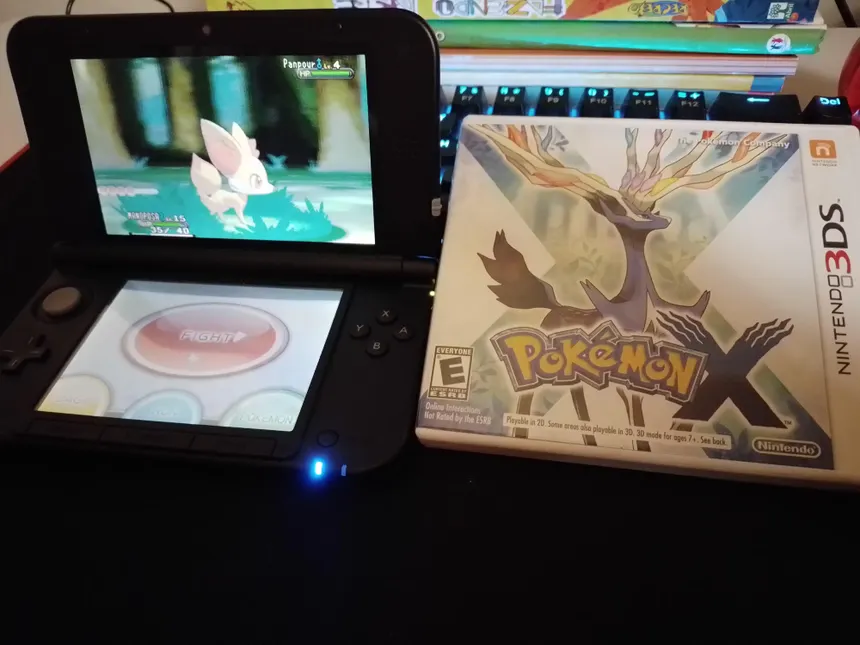
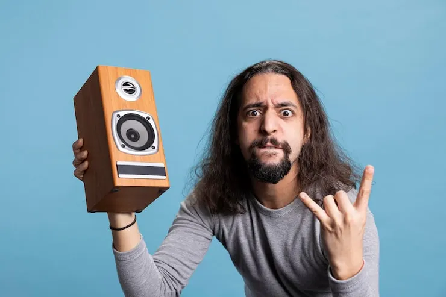

01 / Um pouco sobre mim
Transformando curiosidade em projetos.
Atualmente estudo Análise e Desenvolvimento de Sistemas na FATEC de Carapicuíba. Concluí o curso técnico de Informática para Internet na FIEB em 2025 e estou estudando TypeScript.
Tenho contato com Node.js, Express, React, Java, MySQL, Python e Power BI. Também fiz curso profissionalizante de Manutenção de Computadores e trabalho de forma autônoma nessa área.
Já criei jogos simples de plataforma com GameMaker — uma experiência que me aproximou ainda mais de lógica de programação e criação de sprites. Gosto de estudar tecnologia porque cada aprendizado abre espaço para criar, ajudar e experimentar.
Aprender, construir e continuar evoluindo.
02 / Ferramentas
Habilidades
Tecnologias e experiências que fazem parte da minha jornada.
| Tecnologia | Nível | Experiência |
|---|---|---|
| HTML | Intermediário | 3 anos |
| CSS | Intermediário | 3 anos |
| JavaScript | Intermediário | 3 anos |
| TypeScript | Básico | 6 meses |
| Node.js | Intermediário | 3 anos |
| Express.js | Intermediário | 2 anos |
| React | Intermediário | 1 ano |
| Java | Básico | 9 meses |
| Python | Básico | 9 meses |
| GameMaker | Intermediário | 4 anos |
03 / Fora do código
Interesses que me inspiram
Um pouco do que gosto de fazer no tempo livre.
- Tocar violão
- Programar
- Filmes e séries
- Jogar
- Ouvir música



04 / Próximos passos
Objetivos profissionais
-
Curto prazo · 6 meses
Me manter na vaga híbrida de desenvolvimento como júnior e aprender mais sobre programação.
-
Médio prazo · 1–2 anos
Trabalhar 100% home office na área de desenvolvimento.
-
Longo prazo · 3–5 anos
Conseguir um emprego remoto fora do Brasil, ganhando em dólar ou euro e continuando a morar aqui.
05 / No meu dia a dia
Sites que mais uso
06 / Consistência
Minha rotina de estudos
Um panorama semanal do que estou estudando.
| Dia | Atividade | Duração |
|---|---|---|
| Segunda-feira | Curso de Java | 1h |
| Terça-feira | Linguagem de programação | 2h30 |
| Quarta-feira | Compliance | 1h |
| Quinta-feira | Curso de Java | 1h |
| Sexta-feira | Desenvolvimento Web | 2h30 |
07 / Contato
Tem uma ideia? Vamos conversar.
Preencha o formulário e valide sua mensagem.
kaiquecerrifialho1@gmail.com ↗